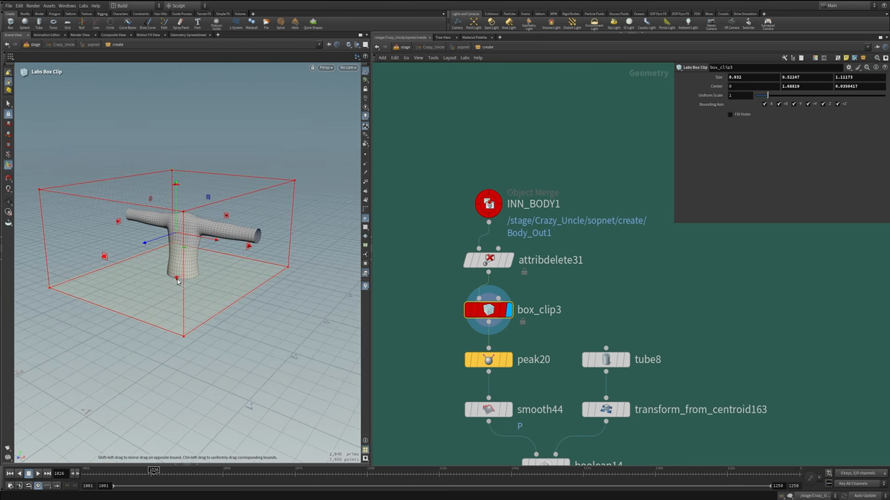
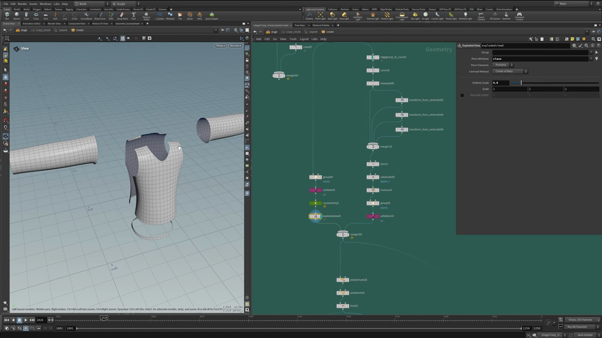
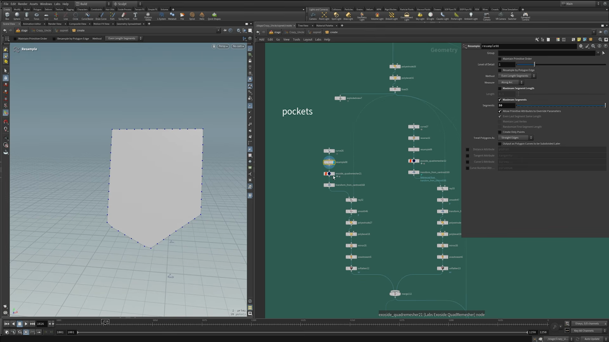
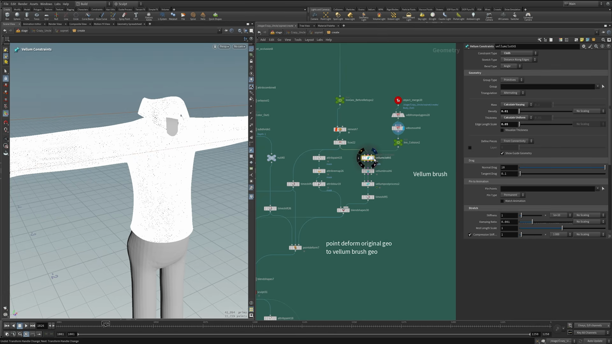
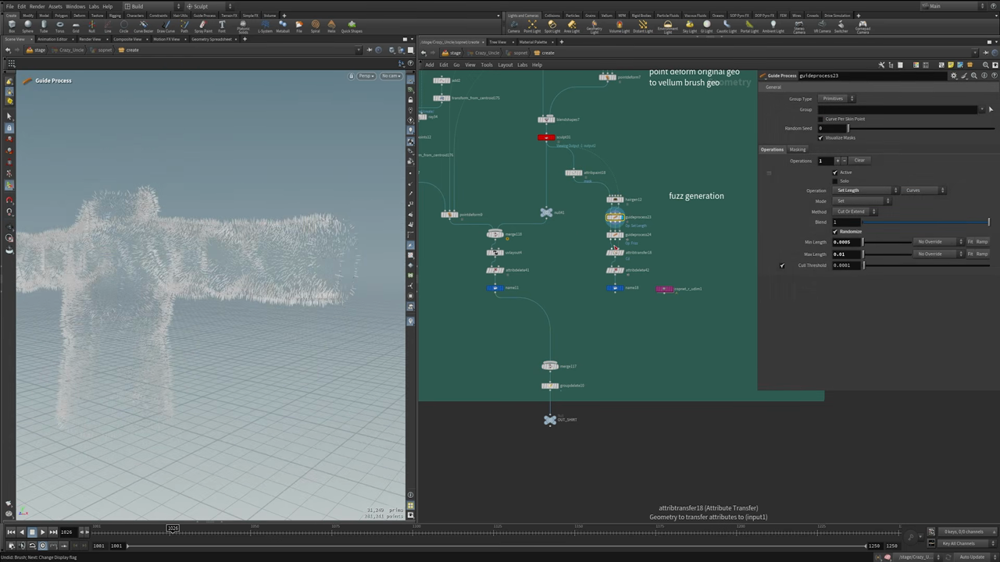

Houdini キャラクター制作 3 — 体から服を切り出してパネルとシワを作る
出典: Character Creation 3 | Cloth Modeling Workflows （SideFX 公式チュートリアル Create a Procedural Character の第3回 / 講師 Roy Kristoffersen さん / Houdini 21 / 20:55 / 英語）。 このページは、上記の動画を見ながら自分用にまとめた日本語の学習メモです。SideFX 公式の翻訳ではありません。 前回は第2回 VDB と Quad Remesher、シリーズ全体は第0回にまとめています。
この回で扱うこと
体のジオメトリを起点にして、服をプロシージャルに作る回です。 体のプロポーションが変われば服も追従するので、キャラクターを作り替えても使い回せます。
Labs Box Clipで体から服の形を切り出す- UV シームからパネルとステッチを作る
- カーブからポケットを作り、
Rayで服に貼り付ける - Vellum ブラシでシワを描く
Hair Generateで布の毛羽立ちを出す
1. 体から服を切り出す
出発点は完成した体のスカルプトです。Object Merge で読み込み、
Attribute Delete で掃除してから本題に入ります。

ここで使うのが Labs Box Clip です。
SideFX Labs のノードなので、インストールされていない場合は入れる必要があります。
Labs 自体は SideFX から提供されているものです。
全方向に対してクリップしてくれるノードで、 このボックスの大きさがそのままシャツの範囲になります。 パラメータは Size と Center、Uniform Scale、それに Bounding Axis の ±X / ±Y / ±Z のチェックボックスです。
講師の方は「ZBrush ならペンでマスクを塗って押し出すところを、 これならプロシージャルにできる」と説明していました。 ボックスを動かすだけで服の範囲が変わるので、あとから何度でも調整できます。
首まわりの穴をあける
Labs Box Clipで切り出しますPeakで体から少し浮かせて、服らしい厚みの位置にしますSmoothをかけます- 別系統で
Tubeを作り、Transform from Centroidで首の位置に置きます Booleanの Subtract で首まわりを抜きます
Boolean では出力プリミティブグループを全部出しておき、
Blast で A outside B を消します。これで首の穴があいたシャツになります。
2. 襟を作る
Boolean をかけると、2つの面が交差したところに AB シームのグループが自動で作られます。
これを襟の元にします。
edgegroup_to_curveでシームのグループからカーブを取り出しますCarveで必要な範囲だけにします- そのままだと形が汚いので
Resampleできれいにします Transformを複数重ねて、襟の断面になる位置にカーブを並べますMergeでまとめてSkinをかけます
ここに落とし穴があります。
Skin は入力されたカーブの順番どおりに面を張るので、
Merge につなぐ順番が正しくないとねじれた形になります。
下から順に1番目、2番目、3番目…と並べる必要があり、
動画では順番を入れ替えて実際に崩れる様子を見せていました。
そのあと Subdivide と Reverse をかけて、UV Flatten まで通します。
3. UV シームからパネルを作る
ここがこの回の中心になる考え方です。実際の服が布のパネルを縫い合わせてできているように、 モデルもパネルに分割します。その分割に UV のシームをそのまま使います。

Group Createで Group Type を Edges にして、シームにしたいエッジを選びます。グループ名はseamsUV Flattenで展開しますConnectivityを UV アトリビュート基準で実行します。これで UV アイランドごとにclassが振られますExploded Viewの Piece Attribute にclassを指定します
これで上の画像のように、シャツが前身頃・後身頃・左右の袖にきれいに分解されます。 UV の切れ目がそのまま布のパネルの切れ目になるのが気持ちのいいところです。
分解できたら PolyExtrude で厚みを付けます。すると各パネルの縁が立ち上がって、
縫い代のようなエッジが出ます。最後に PolyBevel で角を落とし、Fuse でまとめます。
4. ポケットを作って服に貼り付ける

Curveで閉じたカーブを描きます。これがポケットの外形ですResampleで点を整えますLabs Exoside QuadRemesherで四角ポリゴンの面にしますTransform from Centroidで服の少し手前に移動しますRayで服の表面に貼り付けますSmooth→PolyExtrude→PolyBevel→MirrorUV AutoSeam→UV Flattenで UV を付けます
Ray の設定を Project Rays ではなく Minimum Distance にするのがポイントです。
こうしておくと、ポケットを服の上のどこに動かしても、そのまま表面に吸い付いてくれます。
動画でも実際にポケットを動かして見せていて、どこに置いても服に沿っていました。
胸ポケットのフタも同じ作り方で、最後に Mirror して両側に付けています。
5. 色付け
第2回と同じ組み合わせがそのまま使われています。
Line→Resample（Curve U Attribute を作る）→Match SizeAttribute Transferでcurveuを服に転送しますColorを Ramp from Attribute にして、ランプで色の変化を作ります- Physical Ambient Occlusion →
Attribute Remap→Attribute Combineで陰影を混ぜます SubdivideとTime Shiftで仕上げます
6. Vellum ブラシでシワを描く
シワは手でモデリングせず、Vellum の布シミュレーションをブラシで直接触って作ります。

下ごしらえ
- シャツを
Remeshでかなり細かく割ります。シワを出すには密度が要ります Fuseで点をつなげます- 体側から衝突用オブジェクトを作ります。
VDB from Polygons→VDB Smoothでなめらかにしたものを使います
ブラシで描く
Vellum Cloth（Vellum Constraints、Constraint Type = Cloth）を作りますVellum Brushでシワを直接描きますVellum Post Processを通しますTime Shiftで結果を固定します
Vellum Constraints の設定は Stretch Type が Distance Along Edges、 Bend Type が Angle、Density 0.01、Edge Length Scale 0.05、 Normal Drag 10 / Tangent Drag 0.1 になっていました。 ブラシ側の設定は数が多いので、動画では「自分で触ってみてほしい」と省略されています。
元の形とブレンドする
Vellum の結果をそのまま使うのではなく、元のスカルプトと混ぜています。
Attribute Paint → Attribute Remap → Attribute Blur → Blend ShapesAttribute Paint でマスクを塗り、それを Blend Shapes に渡します。
こうすると場所によってシワの効き具合を変えられます。
動画では、裾のあたりは動かさず上のほうだけシワを効かせる、という使い方をしていました。
Point Deform で本番ジオメトリに移す
ここまでの作業は Remesh で細かく割ったジオメトリの上で行われています。
このままでは使えないので、第2回と同じく Point Deform を使います。
ネットワークにも「point deform original geo to vellum brush geo」という付箋が貼られていました。 Quad Remesher で整えたシャツに、Vellum ブラシで作ったシワだけを移す、という使い方です。 これでトポロジーはきれいなまま、シワだけが乗ります。
7. 毛羽立ちを出す

- シャツのスカルプトを
Hair Generateに入れます Guide Processで Set Length を使い、長さを調整します。 動画では Min Length 0.0005 / Max Length 0.01 で、Randomize を有効にしていました- もう一段
Guide Processを足して Frizz でばらつかせます Attribute Transferで服の色を毛にも転送しますAttribute Deleteで不要なアトリビュートを落とし、Nameを付けてMergeします
ズボン側では Attribute Paint で塗ったマスクを毛の density に使って、
毛羽立たせる場所を限定していました。
8. ボタン
ボタンも一つ一つモデリングせずに作られています。
Tubeを置いてTransformします- 穴の位置になる4点を作り、
Copy to Pointsで円柱を配置します Booleanで穴をあけます- 糸はカーブを
Resample→Sweepで作り、Transformと回転で2本に複製します Merge→Transform→Match Size→PolyBevel→ 色 → UV
できたボタンを Copy to Points でシャツに並べ、
シャツと同じ Point Deform を通して、シワに追従させています。
9. ズボンとベルト
ズボンもシャツと同じ流れです。Attribute Delete → Labs Box Clip → Peak から始まります。
- グループを作って
Group Promoteと Soft Transform を重ね、折り目を作ります - シームを引いて
Connectivity→Exploded Viewでパネルに分解します - ファスナー部分の切れ込みを作り、全体を
PolyExtrudeします - ポケットの穴をあけます
ベルトループ
Circle→Resample→Transformでループの元を作りますRayでズボンの表面に貼り付けますTransformで位置を整え、必要な数だけRayを繰り返しますSkinをかけます。Skin には行・列・その両方という設定があり、ここでは列を選んでいましたResampleを2回かけてからSweep→Thicken
ベルト本体も同じ作り方で、最後に穴をあけて PolyExtrude と PolyBevel で仕上げています。
体にぴったり沿った形になります。
この回のまとめ
Labs Box Clipで体から服の形を切り出せば、体を変えても服が追従しますBooleanが作る AB シームのグループからedgegroup_to_curveでカーブを取れば、襟が作れますSkinはMergeの順番が結果を左右します。順番が違うとねじれます- UV シーム →
UV Flatten→Connectivity→Exploded View（Piece Attribute =class）で布のパネルに分解できます Rayを Minimum Distance にすると、ポケットをどこに動かしても服に吸い付きます- シワは
Vellum Brushで描き、Point Deformできれいなトポロジーのほうに移します - 毛羽立ちは
Hair Generate+Guide Process（Set Length / Frizz）で出せます
次の第4回は Blendshapes で、プロシージャルなブレンドシェイプの作り方に入ります。